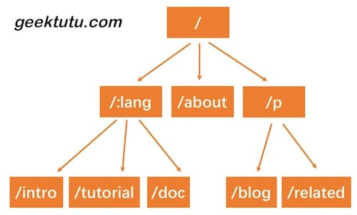

trie树路由
完成目标：
- 使用 Trie 树实现动态路由（dynamic route）解析；
- 支持两种模式
:name和*filepath；
Trie 树简介
之前，我们用了一个非常简单的 map 结构存储了路由表，使用 map 存储键值对，索引非常高效，但是有一个弊端，键值对的存储的方式，只能用来索引静态路由。那如果我们想支持类似于 /hello/:name 这样的动态路由怎么办呢？所谓动态路由，即一条路由规则可以匹配某一类型而非某一条固定的路由。例如 /hello/:name ，可以匹配 /hello/gee 、 hello/jack 等。
动态路由有很多种实现方式，支持的规则、性能等有很大的差异。例如开源的路由实现 gorouter 支持在路由规则中嵌入正则表达式，例如 /p/[0-9A-Za-z]+ ，即路径中的参数仅匹配数字和字母；另一个开源实现 httprouter 就不支持正则表达式。著名的 Web 开源框架 gin 在早期的版本，并没有实现自己的路由，而是直接使用了 httprouter ，后来不知道什么原因，放弃了 httprouter ，自己实现了一个版本。
实现动态路由最常用的数据结构，被称为前缀树（Trie树）。看到名字你大概也能知道前缀树长啥样了：每一个节点的所有的子节点都拥有相同的前缀。这种结构非常适用于路由匹配，比如我们定义了如下路由规则：
- /:lang/doc
- /:lang/tutorial
- /:lang/intro
- /about
- /p/blog
/p/related
我们用前缀树来表示，是这样的。
这幅图重画，有问题，应该是个切片！！！！

HTTP 请求的路径恰好是由/分隔的多段构成的，因此，每一段可以作为前缀树的一个节点。我们通过树结构查询，如果中间某一层的节点都不满足条件，那么就说明没有匹配到的路由，查询结束。
接下来我们实现的动态路由具备以下两个功能。
- 参数匹配:。例如
/p/:lang/doc，可以匹配/p/c/doc和/p/go/doc； - 通配*。例如
/static/*filepath，可以匹配/static/fav.ico，也可以匹配/static/js/jQuery.js，这种模式常用于静态服务器，能够递归地匹配子路径；
- 参数匹配:。例如
Trie 树实现
首先我们需要设计树节点上应该存储哪些信息。
gee/trie.go
type node struct { pattern string // 待匹配路由，例如 /p/:lang part string // 当前结点占有路由的哪一部分，例如 :/lang children []*node // 子节点，例如 [doc, tutorial, intro] isWild bool // 是否精确匹配，part 含有 : 或 * 时为 true }
与普通的树不同，为了实现动态路由匹配，加上了 isWild 这个参数。即当我们匹配 /p/go/doc/ 这个路由时，第一层节点， p 精准匹配到了 p ，第二层节点，go 模糊匹配到 :lang ，那么将会把 lang 这个参数赋值为 go，继续下一层匹配。我们将匹配的逻辑，包装为一个辅助函数。
// matchChild finds the matched child for insert func (n *node) matchChild(part string) *node { for _, child := range n.children { if child.part == part || child.isWild { return child } } return nil } // matchChildren finds all the matched children for search func (n *node) matchChildren(part string) []*node { nodes := make([]*node, 0) for _, child := range n.children { if child.part == part || child.isWild { nodes = append(nodes, child) } } return nodes }
对于路由来说，最重要的当然是注册与匹配了。开发服务时，注册路由规则，映射 handler；访问时，匹配路由规则，查找到对应的 handler。因此，Trie 树需要支持节点的插入与查询。插入功能很简单，递归查找每一层的节点，如果没有匹配到当前 part 的节点，则新建一个， 有一点需要注意， /p/:lang/doc 只有在第三层节点，即 doc 节点， pattern 才会设置为 /p/:lang/doc 。 p 和 :lang 节点的 pattern 属性皆为空 。因此，当匹配结束时，我们可以使用 n.pattern == "" 来判断路由规则是否匹配成功。例如， /p/python 虽能成功匹配到 :lang ，但 :lang 的 pattern 值为空，因此匹配失败。查询功能，同样也是递归查询每一层的节点，退出规则是，匹配到了 * ，匹配失败，或者匹配到了第 len(parts) 层节点。
func (n *node) insert(pattern string, parts []string, height int) { // Recurse to the deepest point if height == len(parts) { n.pattern = pattern return } part := parts[height] child := n.matchChild(part) if child == nil { child = &node{part: part, isWild: part[0] == ':' || part[0] == '*'} n.children = append(n.children, child) } child.insert(pattern, parts, height+1) } // Now we want to enter the page: /assets/css/style.css func (n *node) search(parts []string, height int) *node { if len(parts) == height || strings.HasPrefix(n.part, "*") { // We use the field n.pattern to indicate whether the current node is the end of a full path // A match is successful only if the path of the current node is a complete path if n.pattern == "" { return nil } return n } part := parts[height] children := n.matchChildren(part) for _, child := range children { result := child.search(parts, height+1) if result != nil { return result } } return nil }
Router
Trie 树的插入与查找都成功实现了，接下来我们将 Trie 树应用到路由中去吧。我们使用 roots 来存储每种请求方式的 Trie 树根节点。使用 handlers 存储每种请求方式的 HandlerFunc 。getRoute 函数中，还解析了 : 和 * 两种匹配符的参数，返回一个 map 。例如 /p/go/doc 匹配到 /p/:lang/doc ，解析结果为： {lang: "go"} ， /static/css/style.css 匹配到 /static/*filepath ，解析结果为 {filepath: "css/style.css"} 。
gee/router.go
type router struct { roots map[string]*node handlers map[string]HandlerFunc } // roots key eg, roots['GET'] roots['POST'] // handlers key eg, handlers['GET-/p/:lang/doc'], handlers['POST-/p/book'] func newRouter() *router { return &router{ roots: make(map[string]*node), handlers: make(map[string]HandlerFunc), } } // Only one * is allowed // ip:port/assets/*filepath -> parts: ["assets", "*filepath"] func parsePattern(pattern string) []string { vs := strings.Split(pattern, "/") parts := make([]string, 0) for _, item := range vs { // /hello -> ["", "hello"] // prevent the error: index out of range [0] with length 0 on line 35 if item != "" { parts = append(parts, item) if item[0] == '*' { break } } } return parts } func (r *router) addRoute(method string, pattern string, handler HandlerFunc) { log.Printf("Route %4s - %s", method, pattern) parts := parsePattern(pattern) key := method + "-" + pattern _, ok := r.roots[method] if !ok { r.roots[method] = &node{} } // ip:port/assets/*filepath // r.roots["GET"].insert() // pattern: "assets/*filepath" // parts: ["assets", "*filepath"] // height: 0 r.roots[method].insert(pattern, parts, 0) r.handlers[key] = handler } func (r *router) getRoute(method string, path string) (*node, map[string]string) { searchParts := parsePattern(path) params := make(map[string]string) root, ok := r.roots[method] if !ok { return nil, nil } n := root.search(searchParts, 0) if n != nil { parts := parsePattern(n.pattern) for index, part := range parts { if part[0] == ':' { params[part[1:]] = searchParts[index] } if part[0] == '*' && len(part) > 1 { params[part[1:]] = strings.Join(searchParts[index:], "/") } } return n, params } return nil, nil }
Context 与 handle 的变化
在 HandlerFunc 中，希望能够访问到解析的参数，因此，需要对 Context 对象增加一个属性和方法，来提供对路由参数的访问。我们将解析后的参数存储到 Params 中，通过 c.Param("lang") 的方式获取到对应的值。
gee/context.go
type Context struct { // origin objects Writer http.ResponseWriter Req *http.Request // request info Path string Method string Params map[string]string // response info StatusCode int } func (c *Context) Param(key string) string { value, _ := c.Params[key] return value }
gee/router.go
func (r *router) handle(c *Context) { n, params := r.getRoute(c.Method, c.Path) if n != nil { c.Params = params key := c.Method + "-" + n.pattern r.handlers[key](c) } else { c.String(http.StatusNotFound, "404 NOT FOUND: %s\n", c.Path) } }
router.go 的变化比较小，比较重要的一点是，在调用匹配到的 handler 前，将解析出来的路由参数赋值给了 c.Params 。这样就能够在 handler 中，通过 Context 对象访问到具体的值了。
单元测试
gee/router_test.go
func newTestRouter() *router { r := newRouter() r.addRoute("GET", "/", nil) r.addRoute("GET", "/hello/:name", nil) r.addRoute("GET", "/hello/b/c", nil) r.addRoute("GET", "/hi/:name", nil) r.addRoute("GET", "/assets/*filepath", nil) return r } func TestParsePattern(t *testing.T) { ok := reflect.DeepEqual(parsePattern("/p/:name"), []string{"p", ":name"}) ok = ok && reflect.DeepEqual(parsePattern("/p/*"), []string{"p", "*"}) ok = ok && reflect.DeepEqual(parsePattern("/p/*name/*"), []string{"p", "*name"}) if !ok { t.Fatal("test parsePattern failed") } } func TestGetRoute(t *testing.T) { r := newTestRouter() n, ps := r.getRoute("GET", "/hello/haoran") if n == nil { t.Fatal("nil shouldn't be returned") } if n.pattern != "/hello/:name" { t.Fatal("should match /hello/:name") } if ps["name"] != "haoran" { t.Fatal("name should be equal to 'haoran'") } fmt.Printf("matched path: %s, params['name']: %s\n", n.pattern, ps["name"]) }
使用 Demo
看看框架使用的样例吧：
main.go
func main() { r := gee.New() r.GET("/", func(c *gee.Context) { c.HTML(http.StatusOK, "<h1>Hello Gee</h1>") }) r.GET("/hello", func(c *gee.Context) { // expect /hello?name=haoran c.String(http.StatusOK, "hello %s, you're at %s\n", c.Query("name"), c.Path) }) r.GET("/hello/:name", func(c *gee.Context) { // expect /hello/haoran c.String(http.StatusOK, "hello %s, you're at %s\n", c.Param("name"), c.Path) }) r.GET("/assets/*filepath", func(c *gee.Context) { c.JSON(http.StatusOK, gee.H{ "filepath": c.Param("filepath"), }) }) _ = r.Run(":9999") }
使用 curl 工具，测试结果。
$ curl "http://localhost:9999/hello/haoran"
hello haoran, you're at /hello/haoran
$ curl "http://localhost:9999/assets/css/style.css"
{"filepath":"css/style.css"}